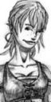

Récits Légendes de Kirin Tor Personnages Célébrités Guildes
Outils Calendrier Calendrier Illustré Mod d'interface
Informations Historiens FAQ Liens Crédits
Les légendes de Kirin Tor
Lenae
Mail : ==> Afficher les personnages de Lenae
La souris
 Age : 20
Age : 20
Sexe : Femme
Race : Humain
Faction : Alliance
Formation : Voleur
Description : C'est comme une musique assourdissante. Les grosses gouttes de pluie sur le bois des pontons et des toits tambourinent et forcent l'entrée de son sommeil.
La jeune femme s'assoit dans le lit. Il ne fait pas encore tout à fait jour dehors. Obscurcit par les lourds nuages noirs de l'orage, le ciel garde encore un peu sa couverture sombre.
Elle repousse le drap et étire son corps moite et brun. Sur la peau mate de ses épaules retombent ses cheveux longs, pas très bien coupés. Ils ont la couleur rose-orangée du coucher de soleil sur les blés.
Elle attrape une chemise trop large pour elle et qui ne sent pas son odeur. Enfouissant son nez dedans, aspirant, et goutant à délice les éfluves restantes de son amant, ne depasse du tissu blanc que son regard violet qui rêvasse. Elle s'en revêt et avance jusqu'à la porte.
Jambes nues, appuyée contre le chambranle, l'orageuse pluie vient lui lecher ses pieds sales et habitués a marcher sans chaussures.
Son sourire éclaire son visage bronzé, constellé de taches de rousseur.
La violine de son regard guette le retour du reste de son âme, de beaucoup de sa vie, son loup, son fiancé...
A portée de mains, toujours, deux dagues sans apparat.
Des vêtements de cuir pas très bien entretenus attendent sur un coin du parquet.
Dans ces affaires, toute sa vie. Toutes ses aventures...
Plus d'infos sur La souris >>>
Lire les 10 récits de La souris >>>
==> Voir la galerie d'images de Lenae